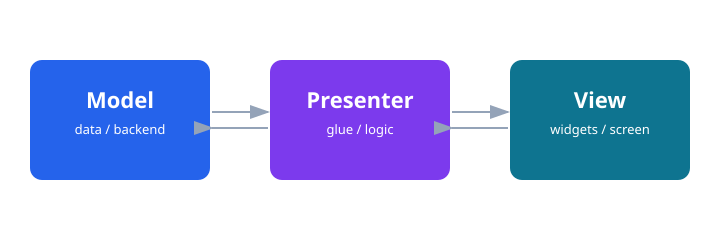

Demo 2 — Interactive UI
Goal: touch a widget and change what's on the screen, live.
What you'll learn
- How to add interactive widgets (Slider, Text) in the TouchGFX Designer.
- How to wire an Interaction so that a user action calls your C++ code.
- How to edit the generated C++ View to update a widget at runtime.
- How the Model-View-Presenter (MVP) pattern organises a TouchGFX app.
Prerequisites
- You have completed Demo 1 — you can create, build, and flash a TouchGFX application to the STM32F746G-DISCO board.
- STM32CubeIDE and TouchGFX Designer 4.26.1 are installed and working.
Steps
🎨 TouchGFX Step 1 — Add a Slider and a Text widget
Open your demo1_firstscreen project (or create a new one from the application-template) in
TouchGFX Designer. In the Widgets panel on the left, find Slider and drag it
onto the screen canvas. Then drag a TextArea widget onto the canvas as well.
Select the TextArea widget and, in its properties, give it a name — valueTxt. Make sure
you enable a wildcard / buffer so the widget can display a changing number at runtime
(set the buffer size to at least 6 characters to hold any slider value).
🎨 TouchGFX Step 2 — Wire an Interaction
Switch to the Interactions tab (top of the Designer). Click Add Interaction. Set:
- Trigger: Slider value changed (choose your Slider from the drop-down).
- Action: Call new virtual function — name it
handleSliderValueChanged.
TouchGFX will generate an empty virtual function stub that you fill in.
handleSliderValueChanged) becomes the exact C++ method name that TouchGFX generates. Write it down — you will need it in Step 4.🎨 TouchGFX ⌨️ CubeIDE Step 3 — Generate code and refresh
Click the Generate Code button (top-right of the Designer). TouchGFX writes (or updates) the
skeleton C++ files under TouchGFX/gui/. When generation finishes, switch to
STM32CubeIDE, select the project in the Project Explorer, and press F5 (Refresh)
so the new files appear.
TouchGFX/generated/ — those are overwritten every time you generate. Your code goes in the non-generated counterparts (e.g. gui/src/screen1_screen/Screen1View.cpp). See Workflow & project structure for the full ownership map.⌨️ CubeIDE Step 4 — Fill in the View function
In STM32CubeIDE, open
TouchGFX/gui/src/screen1_screen/Screen1View.cpp.
TouchGFX has already written an empty stub for handleSliderValueChanged. Replace the empty body
with the lines below:
// Screen1View.cpp — TouchGFX generates the empty stub; you fill the body
void Screen1View::handleSliderValueChanged(int value)
{
Unicode::snprintf(valueTxtBuffer, VALUETXT_SIZE, "%d", value);
valueTxt.invalidate(); // repaint just this widget
}Screen1View.hpp. The valueTxtBuffer/VALUETXT_SIZE names come from the TextArea widget you named valueTxt.⌨️ CubeIDE Step 5 — Build and flash
In STM32CubeIDE, click Build (hammer icon) and wait for a clean build. Then click Run (or Debug) to flash the board over USB. The board will reset and your new screen will appear.
What just happened

TouchGFX organises every application around the Model-View-Presenter (MVP) pattern:
-
View — owns the widgets and is responsible for drawing. When you call
valueTxt.invalidate()you are telling the TouchGFX rendering engine "this widget's pixels are stale — redraw it on the next frame." Nothing is drawn immediately; the engine batches all dirty regions and repaints them efficiently. -
Presenter — the glue layer between the View and the Model. It has no
widgets of its own. In larger apps you move logic here (e.g. "when the slider
reaches 100, start the motor") so your View stays simple. The Presenter also has
a
tickEvent()method called once per frame — useful for animations or polling a sensor value and pushing it to the View. - Model — holds data and talks to the rest of your firmware (RTOS tasks, HAL drivers, communication stacks). The Presenter reads from the Model and updates the View; the View never talks to the Model directly.
tickEvent() runs once per display frame (typically 60 Hz on the STM32F746G-DISCO). Use it in the Presenter to poll a value from the Model and call a View method to refresh the relevant widget — this is the standard pattern for showing live sensor data.Demo 3 wires this all the way to hardware.